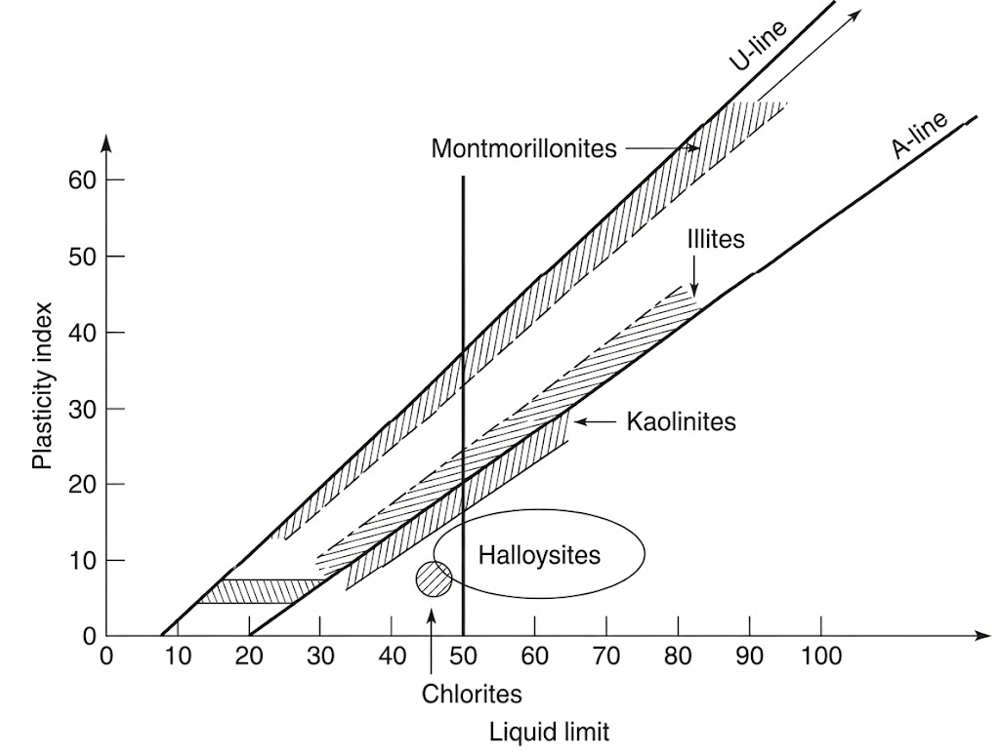
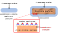

We learned how to calculate the Plasticity Index and the Liquidity Index
We learned how to classify soils according to the USCS.
Contents
Clay mineralogy
Clay activity
Water-clay interaction
Soil fabric
Swelling potential
Objectives covered in this lecture
[O1]: Develop an understanding of soil phase relations, index properties, and their application to soil classification and compaction
After this lecture we will able to:
Describe the mineralogy of soils and its importance for soil behavior.
Calculate the activity and specific surface of clays.
Estimate the swelling potential of soils.
Soil mineral sources
Igneous Rock Composition:
60% Feldspars
17% Amphiboles
12% Quartz
4% Micas
6% Others
Sand Composition:
95% Quartz
5% Mica and others
What happen to the other part of the rock mass?
This is the portion of the rock that turns into clay minerals trough chemical weathering.
Clay Minerals
Crystalline structure (plate-like) that dictates clay particle behavior such as how sheets stack together, bonding, and metallic ions in crystal lattice.
Alumina and silica sheets are the building blocks of clay particles
1:1 clay minerals
Kaolinite:
1 silica sheet + 1 alumina sheet
hydrogen bonds form between the hydroxils of the alumina sheet and the oxygen of the silica sheet
Kaolinite results from weathering (hydrolisis and acid leaching) of feldspar and mica in granite rocks
2:1 clay minerals
Smectites
Most important and common member: montmorillonite
Small crystal with high attraction to water:
High swelling potential
Can damage light structures
Form where silica is abundant, pH and electrolyte content are high, and where there are more Mg+2 & Ca+2 than Na+ and K+
Illite
Most commonly found clay mineral
2 silica shees, 1 alumina sheet
Ioninc bond between layers (K+ ion)
Similar conditions as smectites required for formation, except K+ must be present.
Potassium does not allow water to take its place \(\implies\) more stability
Kaolinite clay
Montmorillonite clay
Illite clay
Since clay particles are very small, Scanning Electron Microscopy (SEM) needs to be used to visualize them.
How can we asses the mineral content of a clay?
Plasticity chart
Calculate the Activity of soils

Montmorillonites tend to plot just below the U-line
Illites tend to plot just above the A-line
Kaolinites tend to plot just below the A-line
Activity of clay minerals
Is the ratio of the plasticity index \(PI\) to the percentage of clay-sized particles (\(< 0.002\) mm) in a soil sample (\(C_F\)).
\( A= PI/ C_F \)
Measures water holding capacity in the soil, wihich depends of amount of clay and type of mineral
Kaolinite absorbs less water than montmorillonite \(\implies\) Kaolinite is less active than montmorillonite
Activity
Activity classification
\(< 0.75\)
Inactive
0.75 - 1.25
Normal
\(> 1.25\)
Active
Participation question 2.13
How does the activity of Illite compares with the activity of montmorillonite?
Illite's activity > Montmorillonite's activity
Illite's activity = Montmorillonite's activity
Illite's activity < Montmorillonite's activity
Typical activity levels of common clay minerals
Mineral
Activity
Na-Montmorillonite
4-7
Ca-Montmorillonite
1.5
Illite
0.5-1.3
Kaolinite
0.3-0.5
Dehydrated Halloysite
0.5
Hydrated Halloysite
0.1
Attapulgite
0.5-1.2
Allophane
0.5-1.2
Mica (Muscovite)
0.2
Calcite
0.2
Quartz
0
Higher activity means high volume change in soil. This means high compressibility and swelling.
Soil containing montmorillonite exhibit high shrinkage and swelling characteristics, which can cause significant damage to structures built on such soils.
Specific surface
Ratio of the area of a particle, to its mass:
\( SSA= \cfrac{A}{V \rho} \)
Example 2.10
How much does the specific surface of a cubic particle of side \(L\) changes when its side is reduced by half?
Let's define \(SSA\) for the cubic particle:
\( \begin{align}
SSA_o& = \cfrac{A_o}{V_o \rho} = \cfrac{6L^2}{L^3 \rho} = \cfrac{6}{L \rho} \\
\end{align} \)
When the side is reduced by half:
\( \begin{align}
SSA_f& = \cfrac{A_f}{V_f \rho} = \cfrac{6(\frac{L}{2})^2}{(\frac{L}{2})^3 \rho} = \cfrac{6 \cdot 2}{L \rho} = 2 \cdot SSA_o \\
\end{align} \)
The smaller the particle size, the higher the specific surface.
How does specific surface influence the water content in the soil?
Larger water contents are expected for fine-grained soils than for coarse-grained soils, all other things such as void ratio and soil structure being equal.
Specific surface is important in concrete and asphalt mix design so you can ensure your are providing sufficient cement paste or asphalt to coat the particles.
Finer particles offer more surface for physical and chemical interactions.
Water-clay particle interaction
Unbalanced force fields at the surface of clay, water polarity, and dissolved ions create electrical double layers around clay particles.
Water that is tightly bound to the surface of clay particles due to electrostatic attraction.

Why do water molecules adsorb to the clay?
The negative charge of clay particles attracts the positive end of water molecules. This is because water is dipolar
Water is held to the clay surface by hydrogen bonding. This is a very strong bond.
Absorbed water is a molecular component of the clay particle. This water can not removed by oven-drying.
The diffuse double layer
Is a structure formed around negatively charged clay particles where mobile ions in the surrounding soil solution are attracted tot he surface, balancing the negative charge.
Note: Absorbed water is a component of the diffuse double layer.
How does water affects the macroscopic behavior of clay?
Absorbed water increases the effective volume of clay particles, leading to swelling or expansion.
Kaolinite has less potential to absorb water than montmorillonite, as a result it exhibits less swelling. Montmorillonite areexpansive soils.
The charge of clay particles and the thickness of the diffuse double layer influence the inter-particle forces, affecting the structural organization of clay particles.
Soil fabric
Refers to the structural arrangement of soil particles and pores, including their orientation, distribution, and connectivity. For clay particles, fabric is influenced by mineralogy, water content, and inter-particle forces.
Flocculated structure
Dispersed structure
Additional notes on the influence of clay fabric on soil behavior
Structure
Flocculated
Dispersed
Concept
Flocs, groups
Continuous
Orientation
Edge to face
Parallel
Permeability
Higher
Lower
Shear strength
Higher
Lower
Sketch
Measuring the swelling potential of soils
Swelling can be measured as a potential for volume expansion or as the stress required to prevent the expansion.
Is the capacity of the soil to swell freely. Is the ratio of the change of volume of the soil over its initial value before water is added.
\( S_P= \cfrac{\Delta V}{V_0} \times 100 \)
Swelling potential is strongly correlated to activity
When is expansion/swelling problematic?
Sites with thick layers of expansive soils, where soil replacement or improvement is costly.
Sites with fluctuating moisture conditions, leading to repeated swelling and shrinkage cycles.
Under light-weight structure/infrastructure such as pavements or 1-2 story buildings.
For brittle or rigid structures that cannot accommodate soil movement.
Example 2.11
The plot below shows the full grain size distribution of a soil with \(PL=12\%\) and \(LL=43\%\). Estimate: (a) the clay fraction of the soil, (b) the activity of the soil, (c) the swelling potential of the soil, and (d) asses the likely mineral content in this soil.
(a): Get the clay fraction
\(\color{green} C_F= 20\%\)
(b): Calculate the activity
\( \begin{align}
A &= PI/C_F \\
&= (43-12)/20 = \color{green} 1.55
\end{align} \)
(c) Estimate the swelling potential from the correlation chart:
Swelling potential is between 1.5% and 5% \(\implies\) Medium swelling potential.
(d) From the plasticity chart, the soil plots just above the A-line \(\implies\) Montmorillonite is the dominant clay mineral.
Example 2.12
The plot below shows the full grain size distribution of a soil with \(PI=20\%\) and \(LL=59\%\). Estimate: (a) the clay fraction of the soil, (b) the activity of the soil, (c) the swelling potential of the soil, and (d) asses the likely mineral content of this soil.
(a): Get the clay fraction
\(\color{green} C_F= 49\%\)
(b): Calculate the activity
\( \begin{align}
A &= PI/C_F \\
&= 20/49 = \color{green} 0.41
\end{align} \)
(c) Estimate the swelling potential from the correlation chart:
Swelling potential is between 1.5% and 5% \(\implies\) Medium swelling potential.
(d) From the plasticity chart, the soil plots below the A-line \(\implies\) Kaolinite is the dominant clay mineral.
Participation question 2.14
What is the dominant mineral of the soil in Example 2.12?
Kaolinite
Illite
Montmorillonite
Watch the Youtube video in the Qr-code for a fun demonstration of soil expansion.